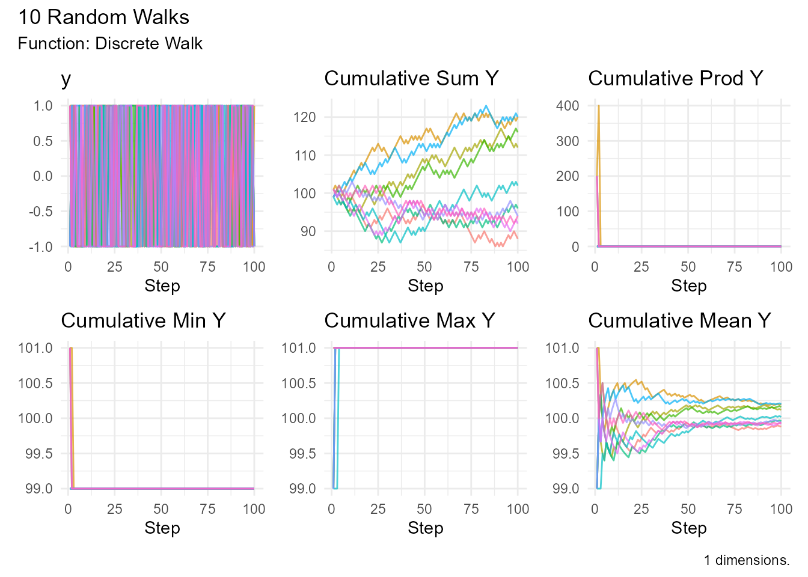
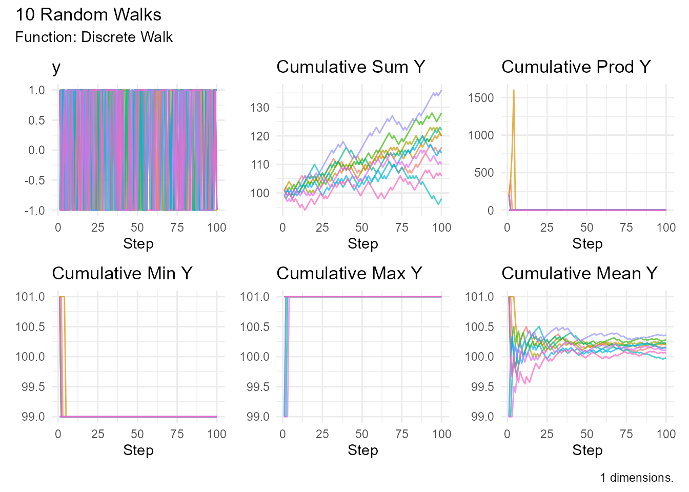
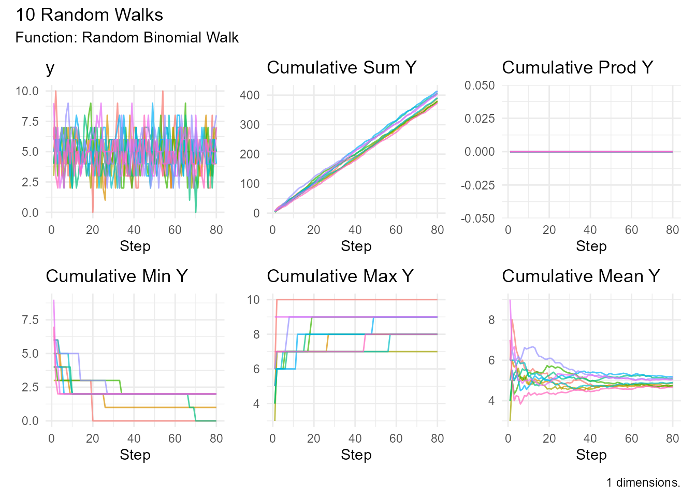
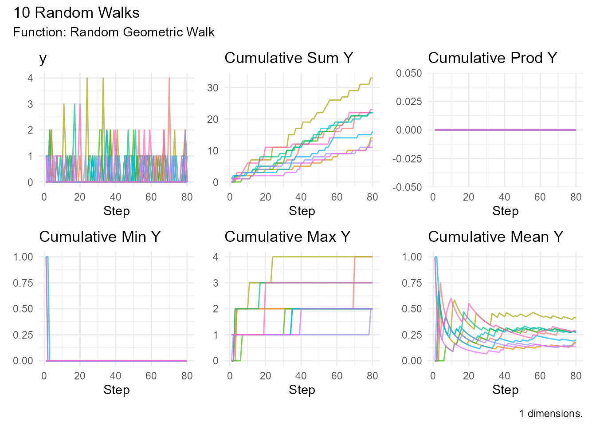
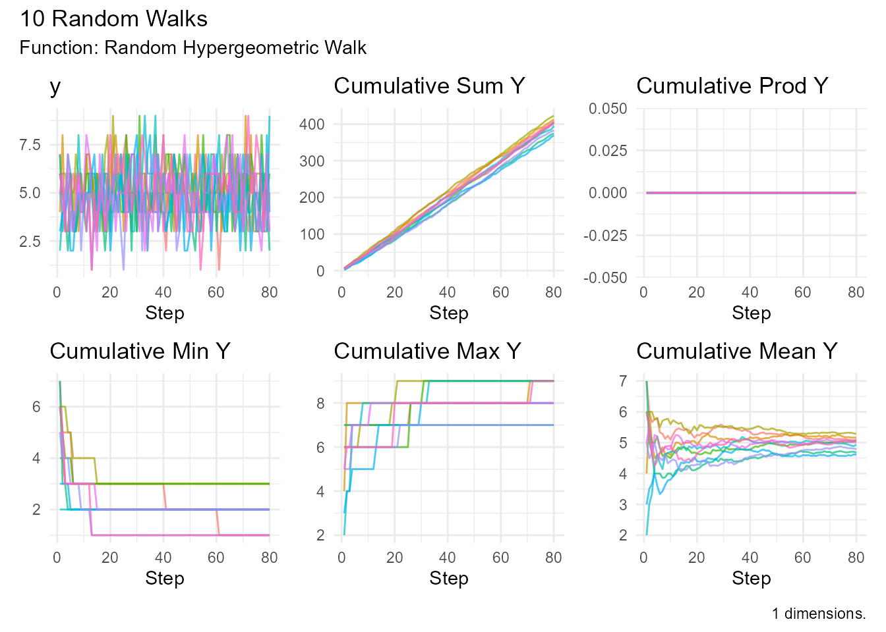
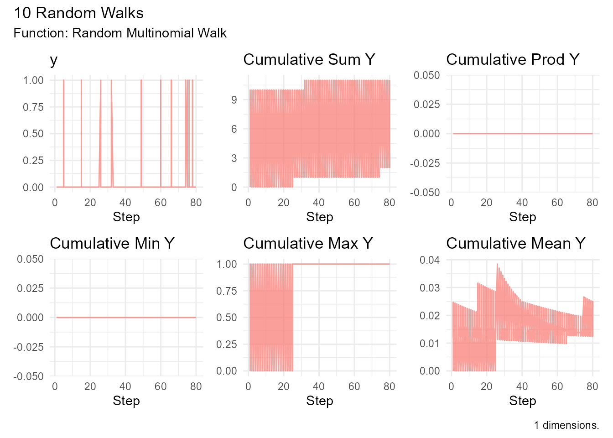
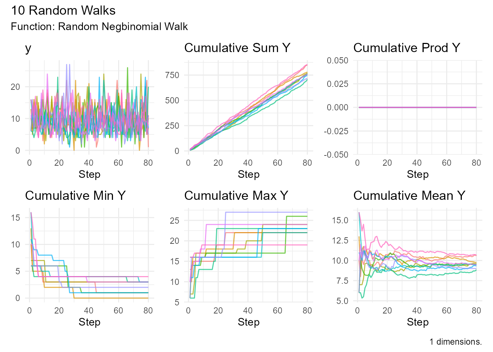
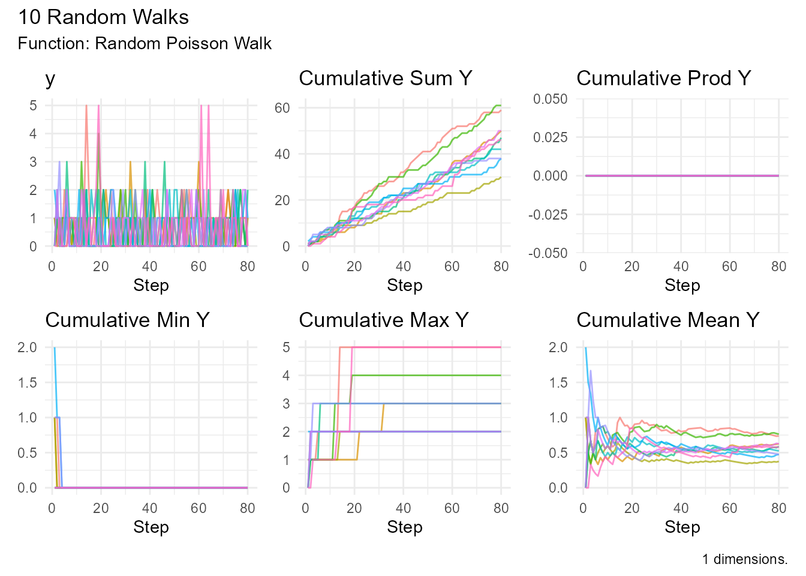
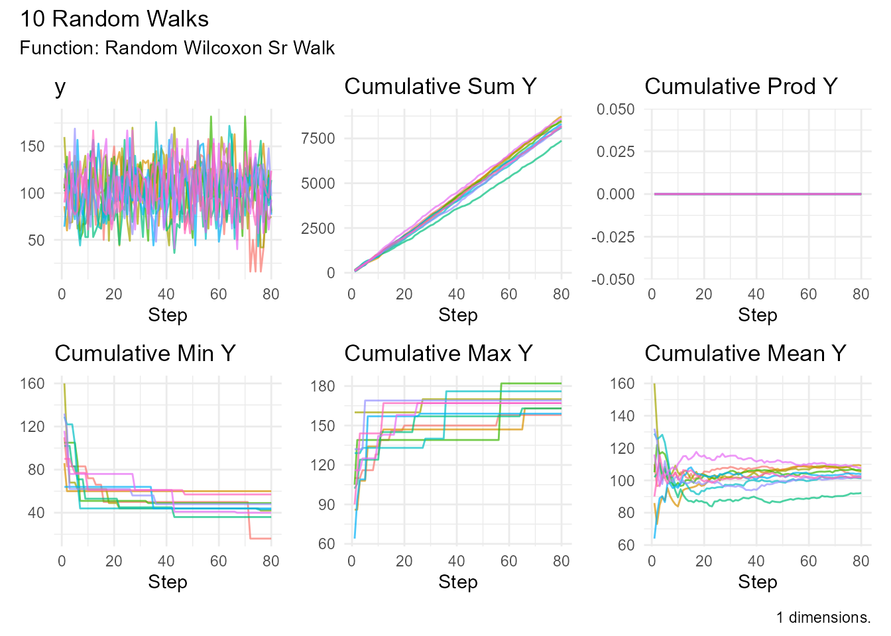
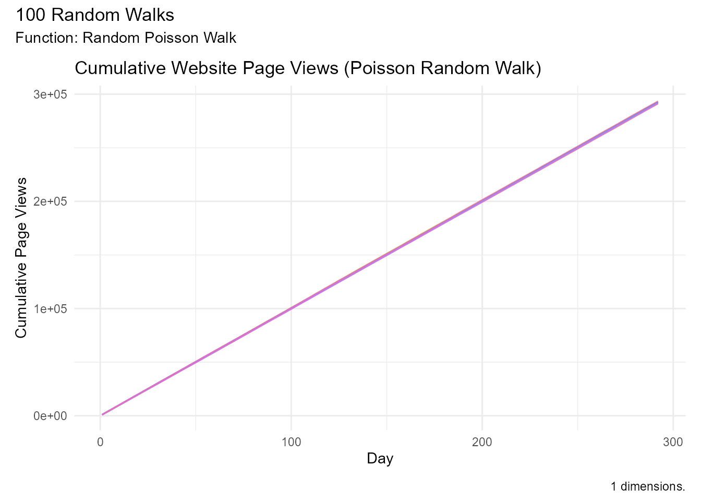

Discrete Distribution Generators
Source:vignettes/discrete-distribution-generators.Rmd
discrete-distribution-generators.RmdRandomWalker provides random walk generators based on discrete probability distributions. These are ideal for modeling count data, categorical outcomes, and processes with discrete state changes.
Common Parameters
All discrete distribution generators share these parameters:
| Parameter | Type | Description | Default |
|---|---|---|---|
.num_walks |
Integer | Number of walks to generate | 25 |
.n |
Integer | Number of steps per walk | 100 |
.initial_value |
Numeric | Starting value for the walk | 0 |
.dimensions |
Integer | Spatial dimensions (1, 2, or 3) | 1 |
Discrete Walk
discrete_walk()
The fundamental discrete random walk with binary outcomes (up or down).
Function Signature:
discrete_walk(
.num_walks = 25,
.n = 100,
.upper_bound = 1,
.lower_bound = -1,
.upper_probability = 0.5,
.initial_value = 100,
.dimensions = 1
)Parameters: - .upper_bound - Maximum
step size (default: 1) - .lower_bound - Minimum step size
(default: -1) - .upper_probability - Probability of moving
up (default: 0.5)
Properties: - Simple binary outcomes - Each step is
either .upper_bound or .lower_bound - Unbiased
when .upper_probability = 0.5 - Can create biased walks by
adjusting probability
Use Cases: - Gambler’s ruin problem - Simple gain/loss scenarios - Teaching probability concepts - Binary decision modeling
Example:
# Unbiased walk (50/50)
discrete_walk(
.num_walks = 10,
.n = 100,
.upper_probability = 0.5
) |> visualize_walks()
# Biased upward (60% up, 40% down)
discrete_walk(
.num_walks = 10,
.n = 100,
.upper_probability = 0.6
) |> visualize_walks()
# Gambler's ruin simulation
gambler <- discrete_walk(
.num_walks = 100,
.n = 1000,
.upper_bound = 1,
.lower_bound = -1,
.upper_probability = 0.48, # House edge
.initial_value = 100
)
gambler |>
summarize_walks(.value = cum_sum_y, .group_var = walk_number) |>
summarize(
prob_ruin = mean(min_val <= 0),
avg_final = mean(max_val)
)
#> Registered S3 method overwritten by 'quantmod':
#> method from
#> as.zoo.data.frame zoo
#> Warning: There were 5 warnings in `dplyr::summarize()`.
#> The first warning was:
#> ℹ In argument: `geometric_mean = exp(mean(log(cum_sum_y)))`.
#> ℹ In group 17: `walk_number = 17`.
#> Caused by warning in `log()`:
#> ! NaNs produced
#> ℹ Run `dplyr::last_dplyr_warnings()` to see the 4 remaining warnings.
#> # A tibble: 1 × 2
#> prob_ruin avg_final
#> <dbl> <dbl>
#> 1 0.05 110.Binomial Distribution
random_binomial_walk()
Random walk based on binomial distribution (number of successes in n trials).
Function Signature:
random_binomial_walk(
.num_walks = 25,
.n = 100,
.size = 10,
.prob = 0.5,
.initial_value = 0,
.samp = TRUE,
.replace = TRUE,
.sample_size = 0.8,
.dimensions = 1
)Parameters: - .size - Number of trials
per step - .prob - Probability of success in each trial
Properties: - Steps are integers: 0, 1, 2, …, size - Mean step = size × prob - Variance = size × prob × (1 - prob) - Symmetric when prob = 0.5
Use Cases: - Quality control (defects in batches) - Survey responses (yes/no questions) - Medical trials (treatment successes) - Coin flip experiments
Example:
# Fair coin flips (10 per step)
random_binomial_walk(
.num_walks = 10,
.size = 10,
.prob = 0.5
) |> visualize_walks()
# Quality control simulation
defects <- random_binomial_walk(
.num_walks = 50,
.n = 100,
.size = 100, # Batch size
.prob = 0.05 # 5% defect rate
)
defects |>
summarize_walks(.value = y, .group_var = walk_number) |>
summarize(
avg_defects_per_batch = mean(mean_val),
max_defects = max(max_val)
)
#> # A tibble: 1 × 2
#> avg_defects_per_batch max_defects
#> <dbl> <int>
#> 1 5.09 12Geometric Distribution
random_geometric_walk()
Random walk based on geometric distribution (number of trials until first success).
Function Signature:
random_geometric_walk(
.num_walks = 25,
.n = 100,
.prob = 0.5,
.initial_value = 0,
.samp = TRUE,
.replace = TRUE,
.sample_size = 0.8,
.dimensions = 1
)Parameters: - .prob - Probability of
success
Properties: - Steps are positive integers: 1, 2, 3, … - Memoryless property - Mean = 1 / prob - Variance = (1 - prob) / prob²
Use Cases: - Time until first success - Reliability testing - Customer conversion time - Waiting time modeling
Example:
# High probability (short waits)
random_geometric_walk(
.num_walks = 10,
.prob = 0.8
) |> visualize_walks()
# Customer conversion modeling
conversion <- random_geometric_walk(
.num_walks = 100,
.n = 50,
.prob = 0.05 # 5% conversion rate
)
conversion |>
summarize_walks(.value = y) |>
pull(mean_val) # Average trials until conversion
#> [1] 19.13025Hypergeometric Distribution
random_hypergeometric_walk()
Random walk for sampling without replacement.
Function Signature:
random_hypergeometric_walk(
.num_walks = 25,
.nn = 100,
.m = 50,
.n = 50,
.k = 10,
.initial_value = 0,
.samp = TRUE,
.replace = TRUE,
.sample_size = 0.8,
.dimensions = 1
)Parameters: - .m - Number of white
balls in urn - .n - Number of black balls in urn -
.k - Number of balls drawn
Properties: - Sampling without replacement - Mean = k × m / (m + n) - Used for finite populations
Use Cases: - Quality control sampling - Lottery probabilities - Card games - Ecological sampling
Example:
# Drawing from an urn
random_hypergeometric_walk(
.num_walks = 10,
.m = 50, # 50 white balls
.n = 50, # 50 black balls
.k = 10 # Draw 10 balls
) |> visualize_walks()
# Quality inspection
inspection <- random_hypergeometric_walk(
.num_walks = 100,
.nn = 50,
.m = 5, # 5 defective items
.n = 95, # 95 good items
.k = 10 # Sample 10 items
)
inspection |>
summarize_walks(.value = y) |>
pull(mean_val) # Average defects found per sample
#> [1] 0.505Multinomial Distribution
random_multinomial_walk()
Random walk with multiple outcome categories.
Function Signature:
random_multinomial_walk(
.num_walks = 25,
.n = 100,
.size = 3,
.prob = rep(1/3, .n),
.initial_value = 0,
.samp = TRUE,
.replace = TRUE,
.sample_size = 0.8,
.dimensions = 1
)Parameters: - .size - Number of trials
- .prob - Vector of probabilities (must sum to 1)
Properties: - Extension of binomial to multiple categories - Returns counts for each category - Probabilities must sum to 1
Use Cases: - Survey responses with multiple choices - Dice rolling - Market share analysis - Classification results
Example:
# Dice rolling (6 outcomes)
random_multinomial_walk(
.num_walks = 10,
.n = 100, # Roll 100 times
.size = 1, # One die per roll
.prob = rep(1/6, 100) # Fair die: 6 categories
) |> visualize_walks()
# Market share simulation
market_share <- random_multinomial_walk(
.num_walks = 50,
.n = 52, # Weekly for a year
.size = 1000, # Total customers
.prob = rep(c(0.2, 0.2, 0.35, 0.25), 13) # Four competitors
)
market_share |> visualize_walks()
#> Warning: Removed 45 rows containing missing values or values outside the scale range
#> (`geom_line()`).
Negative Binomial Distribution
random_negbinomial_walk()
Random walk based on negative binomial (number of failures before r successes).
Function Signature:
random_negbinomial_walk(
.num_walks = 25,
.n = 100,
.size = 1,
.prob = 0.5,
.mu = NULL,
.initial_value = 0,
.samp = TRUE,
.replace = TRUE,
.sample_size = 0.8,
.dimensions = 1
)Parameters: - .size - Target number of
successes - .prob - Probability of success -
.mu - Alternative parameterization (mean)
Properties: - Overdispersed relative to Poisson - Mean = size × (1 - prob) / prob - Variance = size × (1 - prob) / prob²
Use Cases: - Overdispersed count data - Insurance claims - Accident modeling - Count data with extra variability
Example:
# Standard negative binomial
random_negbinomial_walk(
.num_walks = 10,
.size = 10,
.prob = 0.5
) |> visualize_walks()
# Overdispersed count data
claims <- random_negbinomial_walk(
.num_walks = 100,
.n = 12, # Monthly
.size = 5,
.prob = 0.3
)
claims |>
summarize_walks(.value = y, .group_var = walk_number) |>
summarize(
avg_monthly_claims = mean(mean_val),
sd_monthly_claims = mean(sd)
)
#> # A tibble: 1 × 2
#> avg_monthly_claims sd_monthly_claims
#> <dbl> <dbl>
#> 1 11.9 6.04Poisson Distribution
random_poisson_walk()
Random walk based on Poisson distribution (count of events in fixed interval).
Function Signature:
random_poisson_walk(
.num_walks = 25,
.n = 100,
.lambda = 1,
.initial_value = 0,
.samp = TRUE,
.replace = TRUE,
.sample_size = 0.8,
.dimensions = 1
)Parameters: - .lambda - Rate parameter
(mean and variance)
Properties: - Non-negative integer steps - Mean = Variance = λ - Approximates binomial for large n, small p
Use Cases: - Event counts (arrivals, calls, accidents) - Rare events - Queuing theory - Web traffic - Radioactive decay
Example:
# Low rate (rare events)
random_poisson_walk(
.num_walks = 10,
.lambda = 0.5
) |> visualize_walks()
# Call center arrivals
arrivals <- random_poisson_walk(
.num_walks = 100,
.n = 24, # Hourly for a day
.lambda = 15 # 15 calls per hour average
)
arrivals |>
summarize_walks(.value = cum_sum_y, .group_var = walk_number) |>
summarize(
avg_daily_calls = mean(max_val),
max_daily_calls = max(max_val),
min_daily_calls = min(max_val)
)
#> # A tibble: 1 × 3
#> avg_daily_calls max_daily_calls min_daily_calls
#> <dbl> <dbl> <dbl>
#> 1 283. 327 235Wilcoxon Tests
random_wilcox_walk()
Random walk based on Wilcoxon rank sum statistic.
Function Signature:
random_wilcox_walk(
.num_walks = 25,
.n = 100,
.m = 10,
.k = 10,
.initial_value = 0,
.samp = TRUE,
.replace = TRUE,
.sample_size = 0.8,
.dimensions = 1
)Parameters: - .m - Number of
observations in first group - .k - Number of observations
in second group
Use Cases: - Nonparametric hypothesis testing - Rank-based statistics - Distribution-free methods
Example:
random_wilcox_walk(
.num_walks = 10,
.m = 20,
.k = 10
) |> visualize_walks()
random_wilcoxon_sr_walk()
Random walk based on Wilcoxon signed rank statistic.
Function Signature:
random_wilcoxon_sr_walk(
.num_walks = 25,
.nn = 100,
.n = 1,
.initial_value = 0,
.samp = TRUE,
.replace = TRUE,
.sample_size = 0.8,
.dimensions = 1
)Parameters: - .nn - Number of
observations - .n - Integer or vector. Number(s) of
observations in the sample(s) for rsignrank. Default is 1.
Use Cases: - Paired samples testing - Before/after comparisons - Matched pairs analysis
Example:
random_wilcoxon_sr_walk(
.num_walks = 10,
.n = 20
) |> visualize_walks()
Smirnov Distribution
random_smirnov_walk()
Random walk based on Kolmogorov-Smirnov statistic distribution.
Function Signature:
random_smirnov_walk(
.num_walks = 25,
.n = 100,
.sizes = c(1, 1),
.z = NULL,
.alternative = "two.sided",
.initial_value = 0,
.samp = TRUE,
.replace = TRUE,
.sample_size = 0.8,
.dimensions = 1
)Parameters: - .sizes - A numeric vector
of length 2 specifying the sizes parameter for rsmirnov. Default is c(1,
1). - .z - Optional numeric vector for the z parameter in
rsmirnov. Default is NULL. - .alternative - One of
“two.sided” (default), “less”, or “greater”. Indicates the type of test
statistic.
Use Cases: - Goodness-of-fit testing - Distribution comparison - Nonparametric statistics
Example:
random_smirnov_walk(
.num_walks = 10,
.sizes = c(5,10)
) |> visualize_walks()
Comparison Guide
When to Use Each Distribution
| Distribution | Use When… | Key Property |
|---|---|---|
| Discrete Walk | Simple binary outcomes | Up or down with probability |
| Binomial | Counting successes in n trials | Fixed number of trials |
| Geometric | Time until first success | Memoryless property |
| Hypergeometric | Sampling without replacement | Finite population |
| Multinomial | Multiple outcome categories | Extension of binomial |
| Negative Binomial | Overdispersed count data | More variable than Poisson |
| Poisson | Event counts in interval | Mean = Variance |
| Wilcoxon | Nonparametric testing | Rank-based |
| Smirnov | Distribution comparison | Goodness-of-fit |
Count Data Selection
Use Poisson when: - Mean ≈ Variance - Events are independent - Rate is constant
Use Negative Binomial when: - Variance > Mean (overdispersion) - Extra variability present - Poisson model doesn’t fit
Use Binomial when: - Fixed number of trials - Binary outcomes - Independent trials
Practical Examples
Example 1: Website Traffic
# Daily page views (Poisson)
traffic <- random_poisson_walk(
.num_walks = 100,
.n = 365, # Days in year
.lambda = 1000 # Average daily views
)
# Visualize cumulative page views for a sample of walks
traffic |>
dplyr::filter(walk_number %in% levels(traffic$walk_number)[1:10]) |>
visualize_walks(.pluck = "cum_sum") +
ggplot2::labs(
title = "Cumulative Website Page Views (Poisson Random Walk)",
x = "Day",
y = "Cumulative Page Views"
)
# Compute total annual views (summary statistic)
traffic |>
summarize_walks(.value = cum_sum_y) |>
dplyr::pull(max_val) |>
mean() # Total annual views
#> [1] 294053Example 2: Quality Control
# Defect sampling (Hypergeometric)
quality <- random_hypergeometric_walk(
.num_walks = 1000,
.nn = 50, # 50 inspections
.m = 10, # 10 defective in lot
.n = 90, # 90 good in lot
.k = 5 # Sample 5 items
)
quality |>
summarize_walks(.value = y, .group_var = walk_number) |>
dplyr::summarize(
prob_find_defect = mean(max_val > 0)
)
#> # A tibble: 1 × 1
#> prob_find_defect
#> <dbl>
#> 1 1Example 3: Customer Service
# Calls until resolution (Geometric)
resolution <- random_geometric_walk(
.num_walks = 500,
.n = 100,
.prob = 0.15 # 15% resolution rate per call
)
resolution |>
summarize_walks(.value = y) |>
pull(mean_val) # Average calls until resolution
#> [1] 5.67865Best Practices
Choosing Parameters
-
Understand your data
- Is it count data or binary?
- Is there overdispersion?
- Is the population finite or infinite?
-
Match the distribution to the process
- Time between events → Geometric or Poisson
- Success counting → Binomial or Negative Binomial
- Sampling → Hypergeometric
-
Consider practical constraints
- Finite population → Hypergeometric
- Overdispersion → Negative Binomial
- Simple binary → Discrete Walk
Validation
# Check if distribution fits your expectations
walk <- random_poisson_walk(.num_walks = 1000, .n = 100, .lambda = 5)
walk |>
summarize_walks(.value = y) |>
summarize(
empirical_mean = mean_val,
empirical_var = variance,
ratio = variance / mean_val # Should be ≈ 1 for Poisson
)
#> # A tibble: 1 × 3
#> empirical_mean empirical_var ratio
#> <dbl> <dbl> <dbl>
#> 1 5.02 5.05 1.01